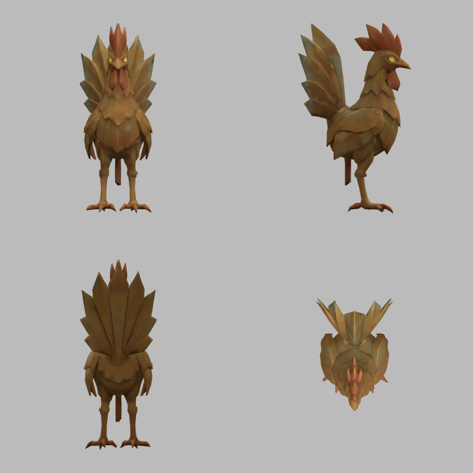

The Bell Spire's volley: your export, with a skeleton and eight moves added by hand. A rooster of riveted brass plates gone green with verdigris: a red copper comb and wattles, glowing yellow eyes, a tall fan of tail plates, plate wings, thin jointed brass legs with clawed feet, and a stub of its rusted iron spindle under its belly. It hops about at a distance, swings round into the wind, marks a lane through you and fires three gust darts down it. Press a move to watch it; the numbers under the page come from the model file.
Idle or Walk sets what it does between actions, and Going turns it on the spot. Volley plays the game's volley at the hero stand-in 5.5 u in front, inside the band it keeps. An action repeats until you press it again. Hurt plays on top of anything. Death drops it: press it again and it spawns back. The bar names the part of the move that is playing, in the game's own words where it has them.

It came through as one piece: a rooster built of riveted brass plates with green verdigris on them, a red copper comb and wattles, glowing yellow eyes, a tall fan of tail plates, plate wings at its sides, thin jointed brass legs with four clawed toes, and a short stub of rusted iron spindle under its belly that stops above the floor.
| Move | What it does | Timing |
|---|---|---|
| Idle | The game's restless hop at rest, a small one. On top: it looks about, the tail fan shifting, a ruffle of the wing plates. | Game: one small hop every 2.85 s (1/0.35 s), 0.06 u. The look and the ruffle are mine. |
| Walk | The game's travel is a hop: both feet push off together and land together, in the air for 55% of each hop, a squash on landing, the wings lifting and the tail dipping in the air, rocking side to side from hop to hop. | Game: 1.5 u/s, a hop every 0.42 s (2.4 a second), 0.26 u up on the game's taller model, 0.16 on yours. |
| Turn left, turn right | Small hops round on the spot. | Mine: 90° a second (the game turns it at once). |
| Volley | The game's aim: it swings a full turn round into the wind in 0.5 s, overshoots and settles shivering on the line, leaned back, stretched up, the eyes swelling, while the Ember lane fills out to the hero and beyond. On your bird the turn is a hop-spin that lands on the line, wings half open and the tail fanned. Then three darts down the locked line, one every 9 ticks: each jerks it back, the head thrusting out with the dart, a gust flash at the beak. Each dart reaches the hero 0.81 s after it leaves. Then it settles. | Game: the lane 48 ticks; the turn 0.5 s; the darts 9 ticks apart at 6.2 u/s; each jerk 0.3 rad back and 0.08 u. The settle is mine. |
| Hurt | A flinch: the head snaps back, the wings flare, the tail flicks. Plays on top of any move. | 0.4 s |
| Spawn | Grows in, then shakes its plates down and stretches up. | Game: grow in 7 frames, about 10% over. The rest is mine. |
| Death | Struck, it jerks back with its wings flung open, then topples over onto its right side with a clank, the legs sticking out stiff. | Mine: 1.8 s, then it stays down. The game pops it where it stands. |
| What was measured, on every frame of every move | Result |
|---|---|
| Planted feet that slide | 0 mm |
| Loops that jump when they restart (idle, walk, both turns) | 0 |
| Anything into the floor | Up to 24 mm on the walk and turns (the bottom of the thighs as it lands); up to 19 mm in the volley (a toe as it lands from the spin); up to 7 mm in the death. |
These numbers come from the model file. I checked the poses as still frames only: the cloud machine cannot play the page at full speed, so the hops, the spin and the fall are yours to judge.